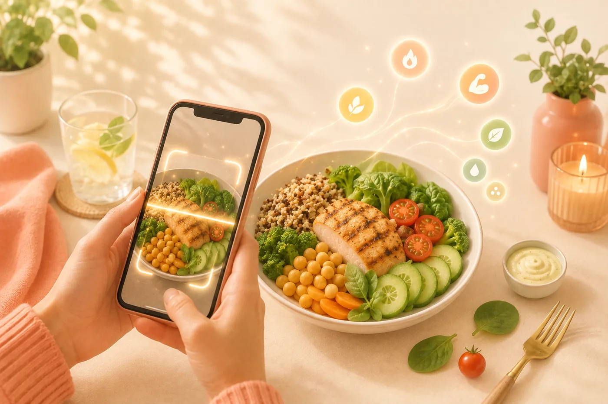
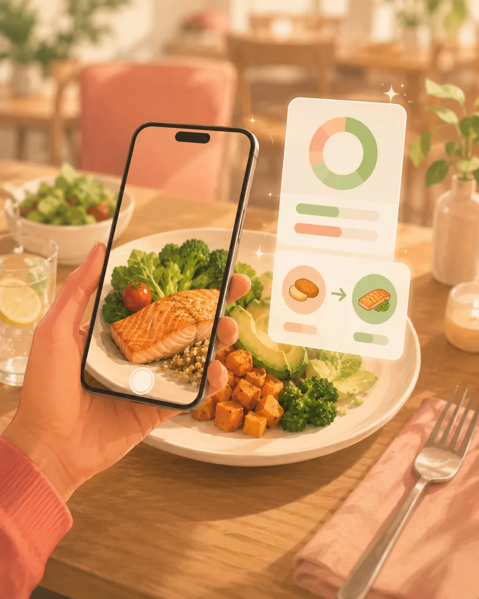

Apunta con la cámara. Llévate el plato entero.
Una fotografía es toda la entrada. Fotocal identifica el plato y los ingredientes que lo componen, estima cuánto hay servido y devuelve una lectura completa: calorías, macros, unos ocho micronutrientes, una puntuación de salud, el nivel de procesamiento del alimento, su carga glucémica, los alérgenos que detecta, un resumen breve de tu coach y una alternativa realista. No se guarda nada hasta que tú lo digas.

Entra una foto, sale el cuadro completo.
Casero, de restaurante, para llevar o las sobras de anoche: la entrada siempre es la misma y el esfuerzo también.
Fotografía el plato
Lo que tengas delante, esté hecho como esté. Sin buena luz, sin colocar la comida, sin poner una moneda al lado como referencia.
La IA lo lee
Identifica el plato, separa los ingredientes que ve y estima la ración a partir de lo que hay servido.
Ajusta la ración
La estimación es un punto de partida, no una sentencia. Muévela hasta lo que realmente has comido, o reparte el plato entre las personas que lo comparten y registra solo tu parte.
Corrige lo que haga falta y guarda
Puedes editar, cambiar o quitar cualquier ingrediente detectado, y añadir lo que la cámara no podía ver. Es un borrador hasta que lo guardas.
Nueve cosas, de una sola foto.
Casi todas las apps se quedan en el recuento de calorías. Lo útil suele ser todo lo que viene después.
El plato y sus ingredientes
Nombrados uno a uno y no como un bloque, para que veas qué cree que está mirando.
Una ración estimada que puedes mover
Leída del plato en vez de supuesta a partir de una ración media, y ajustable con un gesto si no cuadra.
Calorías y macros
La cifra principal más el reparto de proteínas, carbohidratos y grasas que hay detrás.
Unos ocho micronutrientes
Fibra, azúcar, sodio, grasas saturadas y el resto del cuadro que la mayoría de contadores de calorías ignora por completo.
Una puntuación de salud
Un solo número de cómo queda la comida en conjunto, para comparar dos platos sin leer dos tablas.
Nivel de procesamiento NOVA
Cuán procesado está el alimento: una pregunta muy distinta de cuántas calorías tiene, y que pesa a lo largo de los meses.
Carga glucémica
Cuánto es probable que esta ración concreta te mueva el azúcar en sangre, según la cantidad que tienes delante.
Alérgenos
Señalados a partir de los ingredientes que detecta, para que un plato compartido o desconocido no sea una apuesta.
Un resumen del coach y un cambio
Una lectura en lenguaje llano de la comida y un único cambio concreto que la mejoraría. No es un sermón: es una sugerencia.

El plato de restaurante que no puedes buscar
Sin código de barras, sin etiqueta y sin saber muy bien qué le ha puesto la cocina. Una foto devuelve las calorías, la puntuación y un cambio concreto para la próxima vez, antes de que se enfríe el plato.
La sugerencia sabe qué más has comido hoy.
Un cambio solo sirve si encaja con el resto de tu día. Las recomendaciones de Fotocal se generan con tus objetivos reales y tu diario real, no con una idea general de comer sano.
- Tus objetivos van primero: la misma comida recibe un consejo distinto si estás en déficit, en mantenimiento o ganando masa.
- Lee el resto del día. Si a las ocho de la tarde vas corto de proteína, el cambio irá de proteína.
- Propone un cambio, no una reescritura. Algo que podrías hacer de verdad la próxima vez, planteado como una opción y no como una norma.
- Todo lo que escaneas alimenta la pestaña de Recomendaciones y tu Informe Semanal, así que el consejo se vuelve más concreto cuanto más registras.
Preguntas sobre el escaneo por foto
¿Cuánta precisión tiene una estimación por foto?
Es una estimación, y preferimos decirlo a fingir lo contrario. Para el seguimiento del día a día es lo bastante buena como para ser útil, y el control de ración cierra casi toda la diferencia que queda. Si una comida importa de verdad, pesa el ingrediente principal y ajústalo.
¿Y si se equivoca con un ingrediente?
Lo corriges. Todo lo detectado es editable antes de guardar: cámbialo, repésalo, bórralo o añade lo que se haya dejado. Corregir lleva un par de segundos y los totales se actualizan sobre la marcha.
¿Funciona con platos de restaurante y platos mezclados?
Sí, y ahí es donde más se nota. Un curry, un salteado o unas tapas no tienen código de barras ni etiqueta, que es justo la situación que peor resuelven las apps de buscar en una base de datos.
¿Se registra algo automáticamente?
No. Un escaneo produce un borrador. No entra nada en tu diario, en tus anillos ni en tus totales hasta que tocas guardar.
Sigue leyendo
Lo que hay detrás de los números de la pantalla.
Fotografía tu próxima comida y velo todo.
Fotocal es gratis para empezar, con una prueba gratis de 5 días en los planes de pago.
DISPONIBLE ENGoogle Play